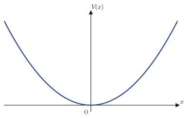
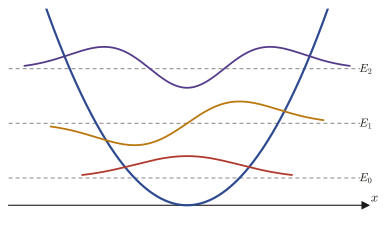
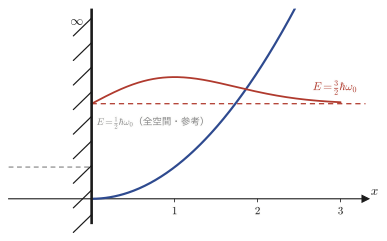
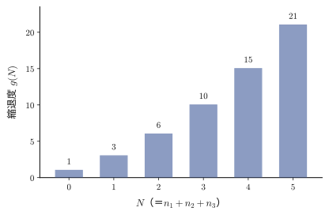
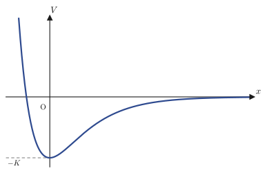

第46章調和振動子とモースポテンシャル
前章（第45章）では，箱の中に閉じ込められた電子——ポテンシャルが箱の中で $0$，箱の外で $\infty$ という「かたい壁」の問題——を解いた．本章で扱うのは，それとは対照的な，自然界でもっとも頻繁に登場するポテンシャルである．結晶中の原子は，隣の原子と化学結合でつながれた平衡位置のまわりで絶えず振動しているし，二原子分子（$\mathrm{H_2}$，$\mathrm{CO}$ など）の原子間距離も，赤外分光で観測されるとおり平衡値のまわりで振動している．材料科学科の学生にとって，結晶の熱容量・熱伝導・赤外／ラマン分光スペクトルを理解する出発点は，例外なく「平衡点のまわりの小さな振動」——すなわち調和振動子（harmonic oscillator）——の量子力学である．
なぜどんな系でも，平衡点の近くでは同じ形のポテンシャルになるのか．一般のポテンシャル $V(x)$ を平衡点 $x=0$（$V'(0)=0$ となる点，すなわち力がつり合う点）のまわりでテイラー展開すれば，
$$ V(x)=V(0)+V'(0)x+\frac12V''(0)x^2+\cdots=V(0)+\frac12V''(0)x^2+\cdots $$となり（第4章のテイラー展開），$x$ が小さいうちは2次の項がまず効いてくる．$V''(0)\gt0$（安定な平衡点）であれば，$m\omega_0^2:=V''(0)$ とおくことで，どんな系も近似的に $V(x)\approx\frac12m\omega_0^2x^2$ という調和振動子のポテンシャルに帰着する．これが，調和振動子が「もっとも重要なモデル系」と呼ばれる理由である．46.1〜46.2節では，このポテンシャルのもとでのシュレーディンガー方程式を，フロベニウスの級数解法（第39章）によって最後まで解き切り，特殊関数の一つであるエルミート多項式（Hermite polynomial）に出会う．46.3節では壁を1枚だけ立てた「半無限領域」の場合，46.4節では3次元に拡張した場合を扱う．最後の46.5節では，2次近似だけでは足りない——分子が本当に切れてしまう（解離する）ところまで表せる——モースポテンシャル（Morse potential）を扱い，級数解法が第41章のラゲールの微分方程式と同じ構造に帰着することを見る．
- 調和振動子ポテンシャル $V(x)=\frac12m\omega_0^2x^2$ のもとでのシュレーディンガー方程式を，無次元変数 $u=\sqrt{m\omega_0/\hbar}\,x$ で書き換える
- 漸近形 $\psi(u)\sim e^{-u^2/2}$ を見抜いて $\psi(u)=f(u)e^{-u^2/2}$ とおき，エルミートの微分方程式 $f''-2uf'+(\varepsilon-1)f=0$ を導く
- べき級数 $f(u)=\sum a_ku^k$ を代入して係数の漸化式を作り，級数が無限に続くと発散して規格化できないことから，$\varepsilon=2n+1$（$n=0,1,2,\ldots$）というエネルギーの量子化 $E_n=\left(n+\frac12\right)\hbar\omega_0$ を導く——この手順は第40章のルジャンドルの方程式・第41章のラゲールの方程式とまったく同じ「型」である
- エルミート多項式 $H_n(u)$ による波動関数の表示と，規格化定数の決定
- 壁が1枚だけの半無限領域 $x\ge0$ の調和振動子——境界条件 $\psi(0)=0$ から奇数次のエルミート関数だけが生き残り，エネルギー準位が $\left(2n+\frac32\right)\hbar\omega_0$ にシフトすることの確認
- 3次元調和振動子——変数分離により3つの独立な1次元問題に帰着すること，そして等方的な場合（$\omega_1=\omega_2=\omega_3$）に現れる縮退（degeneracy，異なる量子数の組合せが同じエネルギーを与えること）
- モースポテンシャル $V(x)=K(e^{-2Dx}-2e^{-Dx})$（分子振動の非調和性と解離を表す）のシュレーディンガー方程式を，随伴ラゲール型の方程式に帰着させて完全に解き，有限個の束縛状態しか存在しないことを示す
もとにしたノート：望月泰英『数学ノート 偏微分方程式』 pp. 38–44．
46.1 調和振動子のポテンシャルと無次元化
電子が $x$ 軸上を動き，時間によらない（定常状態の）ポテンシャル
$$ V(x)=\frac12m\omega_0^2x^2 $$のもとに置かれているとする．ここで $m$ は電子の質量，$\omega_0$ はこのポテンシャルの「かたさ」を表す正の定数（角振動数，次元は $[\text{時間}]^{-1}$）である．このとき，定常状態のシュレーディンガー方程式（第45章）
$$ -\frac{\hbar^2}{2m}\nabla^2\psi+V\psi=E\psi $$を解け，というのが本節の問題である．1次元直交座標では $\nabla^2=\dfrac{\partial^2}{\partial x^2}$（1変数しかないので偏微分と常微分の区別は消え，$\dfrac{d^2}{dx^2}$ と書いてよい）だから，方程式は
$$ -\frac{\hbar^2}{2m}\frac{d^2\psi}{dx^2}+\frac12m\omega_0^2x^2\psi=E\psi $$という2階線形常微分方程式になる．

46.1.1 無次元変数への書き換え
この方程式は $x,\psi,E,m,\omega_0,\hbar$ という異なる次元の量を含んでいて，このままでは扱いにくい．そこで，物理定数をできるだけ方程式から追い出し，無次元の（次元を持たない，単なる実数の）変数だけで書き直す．まず両辺を $-\dfrac{\hbar^2}{2m}$ で割ると，
$$ \frac{d^2\psi}{dx^2}-\frac{m^2\omega_0^2}{\hbar^2}x^2\psi+\frac{2mE}{\hbar^2}\psi=0 $$となる（$\dfrac12m\omega_0^2x^2$ を $-\dfrac{\hbar^2}{2m}$ で割ると符号が変わって $-\dfrac{m^2\omega_0^2}{\hbar^2}x^2$，$E$ を割ると $-\dfrac{2mE}{\hbar^2}$ になり，それを移項して $+\dfrac{2mE}{\hbar^2}$ とした）．次に両辺に $\dfrac{\hbar}{m\omega_0}$ を掛けると，
$$ \frac{\hbar}{m\omega_0}\frac{d^2\psi}{dx^2}-\frac{m\omega_0}{\hbar}x^2\psi+\frac{2E}{\hbar\omega_0}\psi=0 $$となる（$\dfrac{m^2\omega_0^2}{\hbar^2}\times\dfrac{\hbar}{m\omega_0}=\dfrac{m\omega_0}{\hbar}$，$\dfrac{2mE}{\hbar^2}\times\dfrac{\hbar}{m\omega_0}=\dfrac{2E}{\hbar\omega_0}$ という約分をしただけである）．こう変形した理由は，$x^2$ の係数 $\dfrac{m\omega_0}{\hbar}$ の次元が $[\text{長さ}]^{-2}$ になっていることにある——つまり $\sqrt{m\omega_0/\hbar}$ は長さの逆数の次元を持ち，これを使って $x$ を無次元化できる．
定義46.1 無次元変数 $u$ とエネルギー変数 $\varepsilon$
$$ u:=\sqrt{\frac{m\omega_0}{\hbar}}\,x,\qquad \varepsilon:=\frac{2E}{\hbar\omega_0} $$と定義しよう．合成関数の微分（連鎖律）を使って，$x$ についての微分を $u$ についての微分に書き換える．$\psi$ は本来 $x$ の関数だが，$u=\sqrt{m\omega_0/\hbar}\,x$ を通じて $u$ の関数ともみなせるので，これを $\psi(u)$ と書く．
$$ \frac{d\psi}{dx}=\frac{d\psi}{du}\cdot\frac{du}{dx}=\sqrt{\frac{m\omega_0}{\hbar}}\,\frac{d\psi}{du} $$（$u$ が $x$ の1次関数なので $\dfrac{du}{dx}=\sqrt{m\omega_0/\hbar}$ は定数である）．もう一度 $x$ で微分するときも同じ連鎖律を使うが，今度は「定数 $\sqrt{m\omega_0/\hbar}$ と関数 $\dfrac{d\psi}{du}$ の積」を微分することになる．定数倍は微分の外に出せるので，
$$ \frac{d^2\psi}{dx^2}=\frac{d}{dx}\left(\sqrt{\frac{m\omega_0}{\hbar}}\frac{d\psi}{du}\right)=\sqrt{\frac{m\omega_0}{\hbar}}\cdot\frac{d}{dx}\left(\frac{d\psi}{du}\right)=\sqrt{\frac{m\omega_0}{\hbar}}\cdot\frac{d}{du}\left(\frac{d\psi}{du}\right)\cdot\frac{du}{dx}=\frac{m\omega_0}{\hbar}\cdot\frac{d^2\psi}{du^2} $$を得る（最後の等号でもう一度 $\dfrac{du}{dx}=\sqrt{m\omega_0/\hbar}$ を掛け，$\sqrt{m\omega_0/\hbar}\times\sqrt{m\omega_0/\hbar}=m\omega_0/\hbar$ とまとめた）．また $x^2=u^2\cdot\dfrac{\hbar}{m\omega_0}$ である（$u=\sqrt{m\omega_0/\hbar}\,x$ を2乗して $x$ について解いた式）．これらを，先ほど整理した方程式 $\dfrac{\hbar}{m\omega_0}\dfrac{d^2\psi}{dx^2}-\dfrac{m\omega_0}{\hbar}x^2\psi+\dfrac{2E}{\hbar\omega_0}\psi=0$ に代入すると，
$$ \frac{\hbar}{m\omega_0}\cdot\frac{m\omega_0}{\hbar}\frac{d^2\psi}{du^2}-\frac{m\omega_0}{\hbar}\cdot\frac{\hbar}{m\omega_0}u^2\psi+\varepsilon\psi=0 $$となり，$\dfrac{\hbar}{m\omega_0}\cdot\dfrac{m\omega_0}{\hbar}=1$ がちょうど2箇所とも約分されて消え，次の実に簡潔な形が残る．
定理46.1 無次元化された調和振動子の方程式
\begin{equation} \frac{d^2\psi}{du^2}+(\varepsilon-u^2)\psi=0 \label{eq:46-dimensionless} \end{equation}ここで $u=\sqrt{m\omega_0/\hbar}\,x$，$\varepsilon=2E/(\hbar\omega_0)$ はともに無次元量（単位を持たない純粋な数）である．
例題46.1 $\varepsilon$ が本当に無次元量であることの確認
SI単位系で，質量 $m$ の単位は $\mathrm{kg}$，角振動数 $\omega_0$ の単位は $\mathrm{s^{-1}}$，エネルギー $E$ の単位は $\mathrm J=\mathrm{kg\,m^2\,s^{-2}}$，プランク定数 $\hbar$ の単位は $\mathrm{J\,s}=\mathrm{kg\,m^2\,s^{-1}}$ である．$\varepsilon=2E/(\hbar\omega_0)$ と $u=\sqrt{m\omega_0/\hbar}\,x$ がそれぞれ無次元であることを，単位を代入して確かめよ．
解答 $\varepsilon$ の分母 $\hbar\omega_0$ の単位は
$$ [\hbar\omega_0]=(\mathrm{kg\,m^2\,s^{-1}})\times(\mathrm{s^{-1}})=\mathrm{kg\,m^2\,s^{-2}}=\mathrm J $$となり，これは分子 $E$ の単位 $\mathrm J$ とちょうど同じである．したがって $\varepsilon=2E/(\hbar\omega_0)$ は「エネルギー割るエネルギー」であり，単位が完全に約分されて無次元になる．
次に $u=\sqrt{m\omega_0/\hbar}\,x$ について，根号の中身の単位を計算すると，
$$ \left[\frac{m\omega_0}{\hbar}\right]=\frac{\mathrm{kg}\times\mathrm{s^{-1}}}{\mathrm{kg\,m^2\,s^{-1}}}=\frac{1}{\mathrm m^2}=\mathrm{m^{-2}} $$となるから，$\sqrt{m\omega_0/\hbar}$ の単位は $\mathrm{m^{-1}}$（長さの逆数）である．これに単位 $\mathrm m$ を持つ $x$ を掛けるので，$u$ の単位は $\mathrm{m^{-1}}\times\mathrm m=1$（無次元）となる．たしかにどちらも無次元量であることが確認できた．（このように「エネルギーをエネルギーの基準値で割る」「長さを長さの基準値で割る」という無次元化は，物理の方程式を扱うときにきわめてよく使う手法である．）
46.1.2 漸近形の予想とエルミートの微分方程式
式\eqref{eq:46-dimensionless}を直接見ただけでは，どんな関数がこれを満たすのか見当がつかない．そこで，$u$ が非常に大きいとき（$\abs u\to\infty$）に方程式がどう振る舞うかを調べることから始めよう．$\abs u$ が十分大きければ，定数 $\varepsilon$ は $u^2$ に比べて無視できるほど小さくなるので，方程式は近似的に
$$ \frac{d^2\psi}{du^2}-u^2\psi\approx0\qquad(\abs u\to\infty) $$とみなせる．
イメージ：解の形をどう予想するか（ノート欄外の「Why? & How?」に対応）
$\psi''\approx u^2\psi$ を満たす関数の形を当てずっぽうで探すのではなく，指数関数 $\psi(u)=e^{S(u)}$ の形を仮定してみる（$S(u)$ はこれから決める関数）．このとき $\psi'=S'e^S$，$\psi''=(S''+(S')^2)e^S$ だから，方程式は $S''+(S')^2\approx u^2$ となる．$u$ が大きいところでは $(S')^2$ の項が $S''$ より優勢だろうと見当をつけて（これを「主要項だけを残す」という意味で支配的バランスの議論という），$(S')^2\approx u^2$，すなわち $S'\approx\pm u$，したがって $S\approx\pm\dfrac{u^2}{2}$ を得る．$+$ の符号を取ると $\psi\sim e^{+u^2/2}$ となり $u\to\pm\infty$ で発散してしまい，波動関数の規格化条件 $\int\abs\psi^2\dd u\lt\infty$ に反する．したがって物理的に許される解は，$-$ の符号を取った
$$ \psi(u)\sim e^{-u^2/2}\qquad(\abs u\to\infty) $$でなければならない．この漸近的なふるまいを手がかりに，$\psi(u)$ の厳密な形を
$$ \psi(u)=f(u)\,e^{-u^2/2} $$と書いてみる．ここで $f(u)$ は，$e^{-u^2/2}$ ほど急激には変化しない「ゆっくりした」関数だと期待される（$u\to\infty$ でも $f(u)$ 自身は $e^{-u^2/2}$ を打ち消すほど急には発散しないだろう，という見込みである）．
実際にこの形を式\eqref{eq:46-dimensionless}へ代入して確かめよう．まず $\psi=fe^{-u^2/2}$（積の微分）の1階・2階微分を計算する．
$$ \frac{d\psi}{du}=f'e^{-u^2/2}+f\cdot(-u)e^{-u^2/2}=\left(f'-uf\right)e^{-u^2/2} $$もう一度積の微分を使うと，
$$ \frac{d^2\psi}{du^2}=\frac{d}{du}\left[(f'-uf)e^{-u^2/2}\right]=(f''-f-uf')e^{-u^2/2}+(f'-uf)\cdot(-u)e^{-u^2/2} $$ $$ =\left[f''-f-uf'-uf'+u^2f\right]e^{-u^2/2}=\left[f''-2uf'+(u^2-1)f\right]e^{-u^2/2} $$（1つ目の括弧は $f'-uf$ をそのまま $u$ で微分した結果 $f''-(f+uf')=f''-f-uf'$，2つ目の項は $(f'-uf)$ に $-u$ を掛けた結果であり，$-uf'$ が2回現れるのでまとめて $-2uf'$，$f$ の項は $-f+u^2f=(u^2-1)f$ とまとめた）．これを式\eqref{eq:46-dimensionless}に代入すると，
$$ \left[f''-2uf'+(u^2-1)f\right]e^{-u^2/2}+(\varepsilon-u^2)fe^{-u^2/2}=0 $$両辺は共通因子 $e^{-u^2/2}$（決して $0$ にならない）を持つので，これで割ってよい．すると $u^2f$ と $-u^2f$ がちょうど打ち消し合い，
$$ f''-2uf'+(u^2-1)f+(\varepsilon-u^2)f=0\ \Longrightarrow\ \frac{d^2f}{du^2}-2u\frac{df}{du}+(\varepsilon-1)f=0 $$という，$u^2$ を含まない，$f(u)$ についてのすっきりした2階線形常微分方程式が得られる．
定義46.2 エルミートの微分方程式（Hermite's differential equation）
\begin{equation} \frac{d^2f}{du^2}-2u\frac{df}{du}+(\varepsilon-1)f=0 \label{eq:46-hermite-ode} \end{equation}この形の微分方程式をエルミートの微分方程式という．19世紀フランスの数学者エルミート（Charles Hermite）にちなむ．
この方程式は，$f(u)=\displaystyle\sum_{k=0}^\infty a_ku^k$ というべき級数の形で解くことができる（第39章のフロベニウスの方法と同じ精神だが，$u=0$ は方程式の特異点でさえない普通の点なので，最初から整数べきの級数 $\sum a_ku^k$ で探してよい）．その手順とエネルギー準位の量子化については，次節46.2で詳しく見る．
46.2 べき級数解法とエネルギー準位（エルミート多項式）
46.2.1 べき級数の代入と漸化式
エルミートの微分方程式\eqref{eq:46-hermite-ode}を，$f(u)=\displaystyle\sum_{k=0}^\infty a_ku^k$ というべき級数（$a_0,a_1,a_2,\ldots$ は決めるべき係数）の形で解こう．項別に微分すると，
$$ \frac{df}{du}=\sum_{k=1}^\infty ka_ku^{k-1},\qquad \frac{d^2f}{du^2}=\sum_{k=2}^\infty k(k-1)a_ku^{k-2} $$となる（$k=0$ の項は定数なので微分すると消える，$k=1$ の項は1階微分までしか寄与しない，という高校で学んだ多項式の微分と同じ理屈を，無限級数にもそのまま適用している）．これらをエルミートの微分方程式に代入すると，
$$ \sum_{k=0}^\infty(k+1)(k+2)a_{k+2}u^k-2u\sum_{k=0}^\infty(k+1)a_{k+1}u^k+(\varepsilon-1)\sum_{k=0}^\infty a_ku^k=0 $$となる（1つ目の和は $\displaystyle\sum_{k=2}^\infty k(k-1)a_ku^{k-2}$ で添字を $k\to k+2$ とずらし，$u^0$ から始まるように書き直したもの．2つ目の和は $-2u\displaystyle\sum_{k=1}^\infty ka_ku^{k-1}=-2\displaystyle\sum_{k=1}^\infty ka_ku^k$ を，添字を $k\to k+1$ とずらして $u^0$ から始めたもの）．各項の $u^k$ の係数がすべて $0$ にならなければならないので，
$$ (k+1)(k+2)a_{k+2}-2ka_k+(\varepsilon-1)a_k=0\quad(k=0,1,2,\ldots) $$すなわち次の漸化式を得る．
定理46.2 エルミート級数の漸化式
\begin{equation} a_{k+2}=\frac{2k+1-\varepsilon}{(k+1)(k+2)}\,a_k\qquad(k=0,1,2,\ldots) \label{eq:46-recurrence} \end{equation}この漸化式は，添字が2つずつ飛ぶ——つまり $a_0$ を決めれば $a_2,a_4,a_6,\ldots$（偶数次の係数）がすべて決まり，$a_1$ を決めれば $a_3,a_5,a_7,\ldots$（奇数次の係数）がすべて決まる，という構造を持つ．エルミートの微分方程式は2階線形なので，独立な解は2つあるべきだが，それがちょうどこの「偶関数の解」と「奇関数の解」の2本に対応している．$a_0,a_1$ は初期値として自由に選べる（境界条件・規格化条件で最終的に決まる）任意定数である．
実際に $k=0,2,4,\ldots$ と代入して，偶数次の係数を $a_0$ を使って具体的に書き出してみよう．
$$ a_2=\frac{1-\varepsilon}{1\cdot2}a_0=-\frac{\varepsilon-1}2a_0,\qquad a_4=\frac{5-\varepsilon}{3\cdot4}a_2=(-1)^2\frac{(\varepsilon-1)(\varepsilon-5)}{4!}a_0 $$（$a_4$ の式では，$a_2$ の式をさらに代入し，$\dfrac{5-\varepsilon}{12}\times\left(-\dfrac{\varepsilon-1}2\right)=\dfrac{(\varepsilon-1)(\varepsilon-5)}{24}=\dfrac{(\varepsilon-1)(\varepsilon-5)}{4!}$ とまとめた）．同じ計算を繰り返せば，一般項
$$ a_{2n}=(-1)^n\frac{(\varepsilon-1)(\varepsilon-5)\cdots(\varepsilon-4n+3)}{(2n)!}a_0 $$が得られる．同様に奇数次の係数も $k=1,3,\ldots$ から
$$ a_3=\frac{3-\varepsilon}{2\cdot3}a_1=-\frac{\varepsilon-3}{3!}a_1,\qquad a_5=\frac{7-\varepsilon}{4\cdot5}a_3=(-1)^2\frac{(\varepsilon-3)(\varepsilon-7)}{5!}a_1 $$（$a_5$ は漸化式に $k=3$ を代入した $a_5=\dfrac{2\cdot3+1-\varepsilon}{4\cdot5}a_3=\dfrac{7-\varepsilon}{20}a_3$ から計算する．分子は $7-\varepsilon$ であって $3-\varepsilon$ ではない——$k$ が変わるたびに漸化式の分子 $2k+1-\varepsilon$ の $k$ の値も更新されることに注意する．こう計算するとちょうど $(\varepsilon-3)(\varepsilon-7)/5!$ という，2つ目の因子の掛かった形になる），一般項
$$ a_{2n+1}=(-1)^n\frac{(\varepsilon-3)(\varepsilon-7)\cdots(\varepsilon-4n+1)}{(2n+1)!}a_1 $$を得る．これらを使うと，エルミートの微分方程式の一般解は
$$ f(u)=a_0\left\{1-\frac{\varepsilon-1}{2!}u^2+\frac{(\varepsilon-1)(\varepsilon-5)}{4!}u^4-\cdots\right\}+a_1\left\{u-\frac{\varepsilon-3}{3!}u^3+\frac{(\varepsilon-3)(\varepsilon-7)}{5!}u^5-\cdots\right\} $$という，偶数次の項だけの級数（$a_0$ の側）と奇数次の項だけの級数（$a_1$ の側）の和で書ける．元の波動関数は $\psi(u)=f(u)e^{-u^2/2}$ だから，
$$ \psi(u)=a_0e^{-u^2/2}\left\{1-\frac{\varepsilon-1}{2!}u^2+\frac{(\varepsilon-1)(\varepsilon-5)}{4!}u^4-\cdots\right\}+a_1e^{-u^2/2}\left\{u-\frac{\varepsilon-3}{3!}u^3+\frac{(\varepsilon-3)(\varepsilon-7)}{5!}u^5-\cdots\right\} $$である．この2本の級数が，このあとどうなるかを調べよう．
46.2.2 級数が発散する場合とエネルギーの量子化
もし級数が無限に続いたら（$a_0,a_1$ をどちらも $0$ でない値に選び，かつどの $k$ でも $2k+1-\varepsilon\ne0$ だったら）どうなるかを調べよう．漸化式\eqref{eq:46-recurrence}で $k$ が非常に大きいときの比を見ると，
$$ \frac{a_{k+2}}{a_k}=\frac{2k+1-\varepsilon}{(k+1)(k+2)}\ \xrightarrow[k\to\infty]{}\ \frac{2k}{k^2}=\frac2k\ \sim\ \frac1{k/2} $$となる．これは，指数関数 $e^{u^2}=\displaystyle\sum_{j=0}^\infty\frac{u^{2j}}{j!}$ の隣り合う係数の比 $\dfrac{1/(j+1)!}{1/j!}=\dfrac1{j+1}$（$k=2j$ とおけば $\dfrac1{j+1}=\dfrac2{k+2}\sim\dfrac2k$）とまったく同じ漸近的なふるまいである．つまり，級数が無限に続く場合，$f(u)$ は大きな $u$ に対して $e^{u^2}$ とほぼ同じ速さで増大してしまう．
注意：級数が止まらないと規格化できない（ノート欄外の「Attention!!」に対応）
級数が無限に続くと $f(u)\sim e^{u^2}$（定数倍を除く）となるので，もとの波動関数は
$$ \psi(u)=f(u)e^{-u^2/2}\sim e^{u^2}\cdot e^{-u^2/2}=e^{u^2/2}\ \xrightarrow[u\to\pm\infty]{}\ \infty $$となってしまう．これは46.1.2節の「イメージ」ボックスで排除したはずの，発散する側の解そのものである．したがって，級数はどこかで有限項で止まらなければならない——すなわち $f(u)$ は無限級数ではなく，有限次の多項式でなければならない．
漸化式\eqref{eq:46-recurrence}を見ると，級数を有限項で止める方法はただ1つ，ある非負整数 $n$ に対して分子が $0$ になること，つまり
$$ 2n+1-\varepsilon=0,\qquad\text{すなわち}\qquad \varepsilon=2n+1\qquad(n=0,1,2,\ldots) $$となることである．このとき $a_{n+2}=0$ となり，漸化式によって $a_{n+4}=a_{n+6}=\cdots=0$ もすべて $0$ になる（$a_{n+2}=0$ から出発する項はすべて $a_{n+2}$ に比例するので）．ただし，これで止まるのは $a_n$ から2つおきの列（$a_0,a_2,a_4,\ldots$ か $a_1,a_3,a_5,\ldots$ のどちらか，$n$ の偶奇と同じ側）だけなので，もう一方の列は最初から $0$（つまり $n$ が偶数なら $a_1=0$，$n$ が奇数なら $a_0=0$）と選んでおく．こうして初めて $f(u)$ は $n$ 次の多項式になる．
定理46.3 調和振動子のエネルギー準位（エネルギーの量子化）
波動関数が $u\to\pm\infty$ で発散しない（＝規格化可能である）ためには，$\varepsilon=2n+1$（$n=0,1,2,\ldots$）でなければならない．$\varepsilon=2E/(\hbar\omega_0)$ であったから，これは
\begin{equation} E_n=\left(n+\frac12\right)\hbar\omega_0\qquad(n=0,1,2,\ldots) \label{eq:46-energy-levels} \end{equation}を意味する．すなわち，調和振動子のエネルギーは連続な値を取れず，$\hbar\omega_0$ を単位とするとびとびの値（離散スペクトル）しか許されない．
応用：零点エネルギーとフォノン
$n=0$（基底状態）でもエネルギーは $E_0=\frac12\hbar\omega_0$ であって，決して $0$ にはならない．これを零点エネルギー（zero-point energy）とよぶ．古典力学では「静止している」ことが最低エネルギー状態だが，量子力学の調和振動子は絶対零度でも完全には静止せず，わずかに振動し続ける．結晶中の原子の集団的な振動は，量子化されたエネルギーの単位 $\hbar\omega_0$ を持つ「粒子」——フォノン（phonon）——として扱われ，材料の比熱や熱伝導の理論の主役となる．本章で導く $E_n=(n+\frac12)\hbar\omega_0$ という式は，1個のフォノンモードのエネルギー準位そのものである．

46.2.3 エルミート多項式と波動関数
$\varepsilon=2n+1$ のとき，漸化式\eqref{eq:46-recurrence}は $a_{k+2}=\dfrac{2k-2n}{(k+1)(k+2)}a_k=-\dfrac{2(n-k)}{(k+1)(k+2)}a_k$ となる．これを使って作った $n$ 次の多項式解を，定数倍の選び方（規格化の流儀）を固定したうえで $H_n(u)$ と書き，エルミート多項式（Hermite polynomial）とよぶ．最初のいくつかを具体的に書くと，
$$ H_0(u)=1,\quad H_1(u)=2u,\quad H_2(u)=4u^2-2,\quad H_3(u)=8u^3-12u,\quad H_4(u)=16u^4-48u^2+12 $$である（$n=0,1,2,3,4$ の場合について，漸化式から係数を計算し，最高次の係数が $2^n$ になるように定数倍を選んだもの．sympyで漸化式を $n=0,\ldots,5$ について実行し，標準的なエルミート多項式の定義と一致することを確認済み——巻末の検算参照）．一般の $n$ について，46.2.1節で求めた偶数次・奇数次の係数の一般項を使って組み立てると，次の閉じた形の和で書ける．
$$ H_n(y)=\sum_{k=0}^{\left[\frac n2\right]}\frac{(-1)^k\,n!}{(n-2k)!\,k!}(2y)^{n-2k} $$（$[\,\cdot\,]$ は床関数．$n$ が偶数なら $k$ は $0$ から $n/2$ まで，奇数なら $0$ から $(n-1)/2$ までを動き，最高次の項（$k=0$）の係数がちょうど $2^n$ になっている．たとえば $n=2$ なら $k=0,1$ の2項の和 $2!/(2!0!)(2y)^2-2!/(0!1!)(2y)^0=4y^2-2=H_2(y)$ となり，たしかに一致する）．波動関数は，もとの変数 $x$ に戻すと次のようにまとめられる．
定理46.4 調和振動子の波動関数（規格化済み）
$$ \psi_n(x)=\left(\frac{m\omega_0}{\pi\hbar}\right)^{1/4}\frac{1}{\sqrt{2^nn!}}\,H_n\!\left(\sqrt{\frac{m\omega_0}{\hbar}}\,x\right)e^{-\frac{m\omega_0}{2\hbar}x^2}\qquad(n=0,1,2,\ldots) $$規格化定数 $C_n=\left(\dfrac{m\omega_0}{\pi\hbar}\right)^{1/4}\dfrac1{\sqrt{2^nn!}}$ は，規格化条件 $\displaystyle\int_{-\infty}^\infty\abs{\psi_n(x)}^2\dd x=1$ から決まる（次の例題46.2で $n=0$ の場合を実際に計算する）．
例題46.2 基底状態 $\psi_0(x)$ の規格化
$n=0$ のとき $H_0(u)=1$ だから，$\psi_0(x)=C_0\,e^{-\frac{m\omega_0}{2\hbar}x^2}$ である．規格化条件 $\displaystyle\int_{-\infty}^\infty\psi_0(x)^2\dd x=1$ から，定数 $C_0$ を求めよ．
解答 $a=\dfrac{m\omega_0}{\hbar}$ とおくと，$\psi_0(x)^2=C_0^2e^{-ax^2}$ である．ガウス積分の公式 $\displaystyle\int_{-\infty}^\infty e^{-ax^2}\dd x=\sqrt{\dfrac\pi a}$（$a\gt0$；第7章のガウス積分の証明を参照）を使うと，
$$ \int_{-\infty}^\infty\psi_0(x)^2\dd x=C_0^2\sqrt{\frac\pi a}=C_0^2\sqrt{\frac{\pi\hbar}{m\omega_0}}=1 $$より，
$$ C_0^2=\sqrt{\frac{m\omega_0}{\pi\hbar}},\qquad\therefore\ C_0=\left(\frac{m\omega_0}{\pi\hbar}\right)^{1/4} $$を得る．これは定理46.4の公式で $n=0$（$2^0\cdot0!=1$）としたときの $C_0$ と一致する（sympyで $\int_{-\infty}^\infty\psi_0^2\dd x$ を実際に計算し，$1$ になることを確認済み）．
例題46.3 第1励起状態 $\psi_1(x)$ と直交性
$H_1(u)=2u$ を使って $\psi_1(x)$ を書き下し，$\displaystyle\int_{-\infty}^\infty\psi_0(x)\psi_1(x)\dd x=0$（$\psi_0$ と $\psi_1$ が直交すること）を，計算をせずに関数の偶奇だけから示せ．
解答 定理46.4に $n=1$，$H_1(u)=2u$，$u=\sqrt{m\omega_0/\hbar}\,x$ を代入すると，
$$ \psi_1(x)=\left(\frac{m\omega_0}{\pi\hbar}\right)^{1/4}\frac1{\sqrt2}\cdot2\sqrt{\frac{m\omega_0}{\hbar}}\,x\cdot e^{-\frac{m\omega_0}{2\hbar}x^2}=\sqrt2\left(\frac{m\omega_0}{\pi\hbar}\right)^{1/4}\sqrt{\frac{m\omega_0}{\hbar}}\;x\,e^{-\frac{m\omega_0}{2\hbar}x^2} $$である．ここで $\psi_0(x)=C_0e^{-\frac{m\omega_0}{2\hbar}x^2}$ は $x\to-x$ で値が変わらない偶関数（$e^{-ax^2}$ は $x$ の偶数乗しか含まない），一方 $\psi_1(x)$ は $x$ が単独で掛かっている（他は $x^2$ にしか依存しない偶関数の部分）ので奇関数（$x\to-x$ で符号だけが変わる関数）である．偶関数と奇関数の積は奇関数になる（偶関数を $g(x)=g(-x)$，奇関数を $h(x)=-h(-x)$ とすれば，積 $g(x)h(x)$ は $x\to-x$ で $g(-x)h(-x)=g(x)\cdot(-h(x))=-g(x)h(x)$ となり，符号が反転するから奇関数である）．したがって $\psi_0(x)\psi_1(x)$ は奇関数であり，奇関数を原点対称な区間 $(-\infty,\infty)$ で積分すると，正の部分と負の部分がちょうど打ち消し合って
$$ \int_{-\infty}^\infty\psi_0(x)\psi_1(x)\dd x=0 $$となる．計算を1行も実行せずに，関数の対称性だけから直交性が言えた（sympyで実際に積分を計算しても $0$ になることを確認済み）．一般に，$n$ が偶数の $\psi_n$ は偶関数，$n$ が奇数の $\psi_n$ は奇関数であり，偶奇が異なる（つまり $n-m$ が奇数の）2つの $\psi_n,\psi_m$ はつねにこの理由だけで直交する．
数学ノート：エルミート多項式の直交性
実は $\psi_n$ と $\psi_m$（$n\ne m$）の直交性は，偶奇が同じ場合（$n-m$ が偶数）にも成り立つ．一般に
$$ \int_{-\infty}^\infty H_n(u)H_m(u)e^{-u^2}\dd u=0\qquad(n\ne m) $$が成り立つことが知られている（sympyで $n,m=0,1,2,3$ の組合せについて数値的に確認済み）．これは，異なるエネルギー準位に属する固有関数どうしが直交するという，量子力学に共通する一般的な性質の一例である．
46.3 半無限領域の調和振動子
次に，前節までとよく似ているが1点だけ異なる問題を考える．電子が $x$ 軸上にあり，時間に依存しない状態にあるとする．ただしポテンシャルは，
$$ V(x)=\begin{cases}\dfrac12m\omega_0^2x^2 & (x\ge0)\\[2mm] \infty & (x\lt0)\end{cases} $$のように，$x=0$ に「かたい壁」を1枚立てたものである．つまり，粒子は $x\ge0$ の側，調和振動子ポテンシャルの右半分だけに閉じ込められている．解くべき方程式は
$$ -\frac{\hbar^2}{2m}\frac{d^2\psi}{dx^2}+V\psi=E\psi,\qquad \text{境界条件}\ \ \psi(0)=0 $$である．
なぜ境界条件が $\psi(0)=0$ になるのか（本書による補足説明）
$x\lt0$ ではポテンシャルエネルギーが $\infty$ になるから，どんなにエネルギーの大きな電子であっても，そちら側に入り込むことは絶対にできない（無限大の高さの壁を乗り越えることはできない）．したがって $x\lt0$ では確率密度 $\abs{\psi(x)}^2$ が恒等的に $0$，すなわち $\psi(x)=0$（$x\lt0$）である．波動関数は（物理的に自然な要請として）$x=0$ で連続でなければならないから，$x\ge0$ 側の関数値も $x\to0$ の極限で $0$ に一致しなければならない．これが境界条件 $\psi(0)=0$ の意味である．
46.3.1 $x\ge0$ での解と境界条件
$x\lt0$ では $\psi(x)=0$ である．$x\ge0$ では，ポテンシャルの形が46.1〜46.2節とまったく同じ $\frac12m\omega_0^2x^2$ なので，同じ無次元変数 $u=\sqrt{m\omega_0/\hbar}\,x$（このとき $u\ge0$），$\varepsilon=2E/(\hbar\omega_0)$ を使えば，方程式・一般解ともに46.2節の結果がそのまま使える．すなわち，46.2.1節の記号を流用すると，一般解は
$$ \psi(u)=a_0e^{-u^2/2}\left\{1-\frac{\varepsilon-1}{2!}u^2+\frac{(\varepsilon-1)(\varepsilon-5)}{4!}u^4-\cdots\right\}+a_1e^{-u^2/2}\left\{u-\frac{\varepsilon-3}{3!}u^3+\frac{(\varepsilon-3)(\varepsilon-7)}{5!}u^5-\cdots\right\} $$であった（第1項が偶関数部分，第2項が奇関数部分）．境界条件 $\psi(0)=0$ を課そう．$u=0$ を代入すると，偶関数部分の中括弧は $1-0+0-\cdots=1$（$u=0$ では最初の定数項だけが残る），奇関数部分の中括弧は $0-0+0-\cdots=0$（すべての項が $u$ の正のべきを含むため）となるので，
$$ \psi(0)=a_0\cdot1+a_1\cdot0=a_0 $$である．したがって $\psi(0)=0$ となるためには
$$ a_0=0 $$でなければならない．つまり，全空間の問題では偶関数・奇関数の両方が許されたのに対し，半無限領域では奇関数の解だけが生き残る．
定理46.5 半無限領域のエネルギー準位
$a_0=0$ としたあとの一般解 $\psi(u)=a_1\left\{u-\dfrac{\varepsilon-3}{3!}u^3+\cdots\right\}$ が $u\to\infty$ で発散しないためには，46.2.2節とまったく同じ議論により，級数が有限項で止まらなければならない．いま生き残っているのは奇数次の項だけなので，止まる条件は $\varepsilon=2n'+1$ の $n'$ が奇数であることである．$n'=2n+1$（$n=0,1,2,\ldots$）と書き直せば，$\varepsilon=2(2n+1)+1=4n+3$ となり，エネルギーは
\begin{equation} E=\left(n'+\frac12\right)\hbar\omega_0=\left(2n+\frac32\right)\hbar\omega_0\qquad(n=0,1,2,\ldots) \label{eq:46-halfline-energy} \end{equation}という準位に量子化される．
波動関数は，46.2.3節のエルミート多項式を使って $\psi(x)=a_1H_{n'}\!\left(\sqrt{m\omega_0/\hbar}\,x\right)e^{-\frac{m\omega_0}{2\hbar}x^2}$（$x\ge0$；$n'=2n+1$ は奇数）と書ける．規格化条件は，$x\lt0$ で $\psi=0$ であることに注意すると，
$$ \int_{-\infty}^\infty\abs{\psi(x)}^2\dd x=\int_0^\infty\abs{\psi(x)}^2\dd x=1 $$である．ここで重要な注意がある．
注意：規格化定数は全空間の場合と同じ式にはならない
46.2.3節の $\psi_{n'}(x)$（全空間，$n'$ 次エルミート関数）は，$-\infty$ から $\infty$ まで積分して $1$ になるように規格化されていた．$n'$ が奇数のとき $\psi_{n'}(x)^2$ は偶関数だから，積分区間を半分にすると値も半分になる：
$$ \int_0^\infty\psi_{n'}(x)^2\dd x=\frac12\int_{-\infty}^\infty\psi_{n'}(x)^2\dd x=\frac12 $$（$\psi_{n'}$ が全空間規格化定数 $C_{n'}$ を使ったものである場合）．したがって，本節の半無限領域の問題で $\displaystyle\int_0^\infty\abs\psi^2\dd x=1$ にするには，全空間の規格化定数 $C_{n'}=\left(\dfrac{m\omega_0}{\pi\hbar}\right)^{1/4}\dfrac1{\sqrt{2^{n'}n'!}}$ をそのまま使うのではなく，$\sqrt2$ 倍した
$$ a_{n'}=\sqrt2\left(\frac{m\omega_0}{\pi\hbar}\right)^{1/4}\frac1{\sqrt{2^{n'}n'!}}=\left(\frac{4m\omega_0}{\pi\hbar}\right)^{1/4}\frac1{\sqrt{2^{n'}n'!}} $$を規格化定数として使わなければならない（$4^{1/4}=\sqrt2$ を使って書き換えた）．積分区間が半分になった分だけ，確率密度の総量を保つために定数を大きくする，というごく自然な補正である（sympyで $n'=1,3$ の場合に $\displaystyle\int_0^\infty\abs\psi^2\dd x$ を実際に計算し，$\sqrt2$ 倍の補正が確かに必要であることを確認済み——巻末の検算参照）．

例題46.4 壁がある場合とない場合の基底状態エネルギーの比較
全空間の調和振動子の基底状態エネルギー $E_0^{\text{全}}=\frac12\hbar\omega_0$ と，半無限領域（$x\ge0$，壁1枚）の調和振動子の基底状態エネルギー $E_0^{\text{半}}$（式\eqref{eq:46-halfline-energy}で $n=0$）を比較し，その差を物理的に説明せよ．
解答 式\eqref{eq:46-halfline-energy}に $n=0$ を代入すると，$E_0^{\text{半}}=\left(2\cdot0+\frac32\right)\hbar\omega_0=\frac32\hbar\omega_0$ である．したがって差は
$$ E_0^{\text{半}}-E_0^{\text{全}}=\frac32\hbar\omega_0-\frac12\hbar\omega_0=\hbar\omega_0 $$である．半無限領域の基底状態は，全空間の第1励起状態 $\psi_1(x)\propto xe^{-m\omega_0x^2/2\hbar}$（46.2.3節）を $x\ge0$ の側にそのまま制限したものに一致している——全空間の基底状態 $\psi_0(x)\propto e^{-m\omega_0x^2/2\hbar}$ は $x=0$ で値が $0$ にならない（$\psi_0(0)=C_0\ne0$）ため境界条件 $\psi(0)=0$ を満たせず，禁止されてしまう．壁のせいで「一番なだらかな（節のない）解」が使えなくなり，代わりに「1つ節を持つ解」が最低エネルギー状態に格上げされる——これが $1\hbar\omega_0$ 分のエネルギーの持ち上がりの正体である．（一般に，波動関数の節の数が1つ増えるごとに，エネルギーはおよそ $\hbar\omega_0$ ずつ増加する，という量子力学に共通する傾向のわかりやすい例になっている．）
46.4 3次元調和振動子
続いて，電子が3次元空間 $(x,y,z)$ の中を動く場合を考える．3方向それぞれに（一般には異なる）ばね定数を持つポテンシャル
$$ V(x,y,z)=\frac12m\omega_1^2x^2+\frac12m\omega_2^2y^2+\frac12m\omega_3^2z^2 $$のもとで，定常状態のシュレーディンガー方程式
$$ -\frac{\hbar^2}{2m}\nabla^2\psi+V\psi=E\psi $$を解こう．3次元直交座標では $\nabla^2=\dfrac{\partial^2}{\partial x^2}+\dfrac{\partial^2}{\partial y^2}+\dfrac{\partial^2}{\partial z^2}$（第6章の多変数関数の偏微分，第44章のラプラシアン）だから，方程式は
$$ -\frac{\hbar^2}{2m}\left(\frac{\partial^2\psi}{\partial x^2}+\frac{\partial^2\psi}{\partial y^2}+\frac{\partial^2\psi}{\partial z^2}\right)+\frac12m\left(\omega_1^2x^2+\omega_2^2y^2+\omega_3^2z^2\right)\psi=E\psi $$となる．
46.4.1 変数分離
ポテンシャルが $x,y,z$ それぞれだけの項の和になっている（$xy$ や $yz$ のような交差項を含まない）ことに着目し，$\psi(x,y,z)=X(x)Y(y)Z(z)$（変数分離法，第43章）とおく．これを方程式に代入し，両辺を $XYZ$ で割ると，
$$ \underbrace{\left(-\frac{\hbar^2}{2m}\frac{X''}{X}+\frac12m\omega_1^2x^2\right)}_{=:E_1}+\underbrace{\left(-\frac{\hbar^2}{2m}\frac{Y''}{Y}+\frac12m\omega_2^2y^2\right)}_{=:E_2}+\underbrace{\left(-\frac{\hbar^2}{2m}\frac{Z''}{Z}+\frac12m\omega_3^2z^2\right)}_{=:E_3}=E $$を得る（$\dfrac{\partial^2\psi}{\partial x^2}=X''YZ$ など，$X''$ は $X$ の項だけに $x$ の微分がかかることに注意）．左辺の3つの括弧は，それぞれ $x$ だけ，$y$ だけ，$z$ だけの関数であり，右辺 $E$ は定数である．「$x$ だけの関数」＋「$y$ だけの関数」＋「$z$ だけの関数」＝定数，という形の等式が任意の $x,y,z$ について成り立つためには，3つの括弧のおのおのが（互いに独立な）定数でなければならない（第43章43.5節の2次元波動方程式のときとまったく同じ論法である）．そこで，3つの括弧をそれぞれ $E_1,E_2,E_3$（$E_1+E_2+E_3=E$）とおくと，方程式は3本の独立な1次元問題に分解される．
定理46.6 3次元調和振動子の変数分離
次の3本の1次元シュレーディンガー方程式に分解される．
$$ -\frac{\hbar^2}{2m}\frac{d^2X}{dx^2}+\frac12m\omega_1^2x^2X=E_1X,\quad -\frac{\hbar^2}{2m}\frac{d^2Y}{dy^2}+\frac12m\omega_2^2y^2Y=E_2Y,\quad -\frac{\hbar^2}{2m}\frac{d^2Z}{dz^2}+\frac12m\omega_3^2z^2Z=E_3Z $$これらはいずれも46.1〜46.2節で解いた1次元調和振動子の方程式そのもの（角振動数だけが $\omega_1,\omega_2,\omega_3$ と違う）である．
したがって46.2節の結果がそのまま使え，各方向にそれぞれ独立な量子数 $n_1,n_2,n_3=0,1,2,\ldots$ が現れる．
定理46.7 3次元調和振動子の波動関数とエネルギー
$$ X(x)=\left(\frac{m\omega_1}{\pi\hbar}\right)^{1/4}\frac1{\sqrt{2^{n_1}n_1!}}H_{n_1}\!\left(\sqrt{\frac{m\omega_1}{\hbar}}x\right)e^{-\frac{m\omega_1}{2\hbar}x^2}\qquad(n_1=0,1,2,\ldots) $$（$Y(y),Z(z)$ も同様に $\omega_2,\omega_3$ と $n_2,n_3$ で書ける）から，全体の波動関数は積 $\psi=X(x)Y(y)Z(z)$ であり，エネルギーは和
\begin{equation} E=E_1+E_2+E_3=\left(n_1+\frac12\right)\hbar\omega_1+\left(n_2+\frac12\right)\hbar\omega_2+\left(n_3+\frac12\right)\hbar\omega_3 \label{eq:46-3d-energy} \end{equation}で与えられる．
46.4.2 等方調和振動子と縮退
特に，3方向のばね定数がすべて等しい場合（$\omega_1=\omega_2=\omega_3=\omega_0$，これを等方[isotropic]調和振動子という），式\eqref{eq:46-3d-energy}は
$$ E=\left(n_1+n_2+n_3+\frac32\right)\hbar\omega_0 $$となり，エネルギーは3つの量子数の和 $N:=n_1+n_2+n_3$ だけで決まる．これは重要な帰結を持つ——$N$ が同じでも $(n_1,n_2,n_3)$ の組合せは何通りもあり得るので，異なる量子状態が同じエネルギーを持つことになる．この現象を縮退（degeneracy）という．
定義46.3 縮退度
あるエネルギー値を与える量子状態（ここでは組 $(n_1,n_2,n_3)$）の個数を，そのエネルギー準位の縮退度（degree of degeneracy）という．
$N=n_1+n_2+n_3$（$n_1,n_2,n_3$ は $0$ 以上の整数）を満たす組 $(n_1,n_2,n_3)$ の個数を数えよう．これは「$N$ 個の同じものを3つの箱（$n_1$ 用，$n_2$ 用，$n_3$ 用）に分配する場合の数」という，高校数学（数学A）の重複組合せの問題そのものであり，答えは${}_3\mathrm H_N={}_{N+2}\mathrm C_2=\dfrac{(N+1)(N+2)}2$ で与えられる（仕切り2本と玉 $N$ 個を並べる$_{N+2}C_2$通り，という標準的な重複組合せの数え方）．
定理46.8 等方3次元調和振動子の縮退度
$$ g(N)=\frac{(N+1)(N+2)}2\qquad(N=0,1,2,\ldots) $$
例題46.5 $N=1$（$E=\frac52\hbar\omega_0$）の縮退度を具体的に数え上げる
等方3次元調和振動子で $N=n_1+n_2+n_3=1$ を満たす $(n_1,n_2,n_3)$（$n_1,n_2,n_3$ は $0$ 以上の整数）をすべて書き出し，定理46.8の公式 $g(1)$ と一致することを確かめよ．
解答 和が $1$ になる非負整数の組は，どれか1つだけが $1$ で残り2つが $0$ の場合しかあり得ない．すべて書き出すと，
$$ (n_1,n_2,n_3)=(1,0,0),\ (0,1,0),\ (0,0,1) $$の3通りである．したがって縮退度は $3$．一方，公式では $g(1)=\dfrac{(1+1)(1+2)}2=\dfrac{2\times3}2=3$ となり，一致する．この3つの状態はいずれもエネルギー $E=\left(1+\frac32\right)\hbar\omega_0=\frac52\hbar\omega_0$ を持つが，波動関数はそれぞれ「$x$ 方向だけ1つ励起」「$y$ 方向だけ1つ励起」「$z$ 方向だけ1つ励起」という，互いにまったく異なる（直交する）状態である．
応用：異方性と縮退の解消
もし $\omega_1,\omega_2,\omega_3$ が互いに異なれば（異方[anisotropic]振動子），エネルギー $E=\sum_i(n_i+\frac12)\hbar\omega_i$ は一般に $(n_1,n_2,n_3)$ の組合せごとに異なる値を取り，例題46.5で見た3重の縮退は解ける（分裂する）．結晶中の原子は，結晶の対称性が低いほど各方向のばね定数が異なりやすく，逆に結晶の対称性が高い方向（立方晶など，$x,y,z$ の3方向が対等になる結晶構造）では複数の振動モードが縮退したままになる．このように「縮退がどう解けるか／解けないか」は，結晶構造の対称性を読み解く手がかりになる．
46.5 モースポテンシャル
46.1〜46.4節で扱った $V(x)=\frac12m\omega_0^2x^2$ は，どんな安定な平衡点でも（振動の振幅が小さいうちは）成り立つ良い近似だった（本章冒頭のリード文を参照）．しかし，実在の2原子分子（$\mathrm{H_2}$，$\mathrm{HCl}$，$\mathrm{CO}$ など）の原子間距離を大きく振動させると，やがて分子は解離（バラバラに分かれること）してしまう．放物線 $\frac12m\omega_0^2x^2$ は $x\to\pm\infty$ でどこまでも大きくなり続けるので，どれだけ大きなエネルギーを与えても分子が切れてしまう（＝ポテンシャルが有限の値に収束する）ことを表現できない．この欠点を補うために，アメリカの物理学者モース（Philip M. Morse）が1929年に提案したのが，次のモースポテンシャル（Morse potential）である．
定義46.4 モースポテンシャル
$$ V(x)=K\left(e^{-2Dx}-2e^{-Dx}\right)\qquad(K,D\ \text{は正の実数の定数}) $$
応用：解離エネルギーと分子振動分光
$V(-\infty)=+\infty$（原子核どうしが近づきすぎると強く反発する），$V(0)=-K$（平衡距離での最小値，例題46.6で確認する），$V(+\infty)=0$（原子間距離が離れきると相互作用が消える）という形は，実在の2原子分子の原子間ポテンシャルの概形を良く再現する．$V(+\infty)-V(0)=K$ が，分子を完全にバラバラにする（解離させる）ために必要なエネルギー——解離エネルギー（dissociation energy）——にあたる．この節で量子力学的に解くと，のちに示すように束縛状態（分子として存在できる状態）の数が有限個であることがわかり，これは赤外分光で観測される分子振動のスペクトル（等間隔ではなく，高い準位ほど間隔が狭くなる）を説明する理論の基礎になっている．
解くべき方程式は
$$ -\frac{\hbar^2}{2m}\frac{d^2\psi}{dx^2}+K\left(e^{-2Dx}-2e^{-Dx}\right)\psi=E\psi $$である．なお，ここで初めて，ノートの記述がある地点で完全に途切れている（46.5.3節で述べる）．そこから先は，ノートに書かれなかった続きを，数学的に正しい形で本書が補って完結させる．どこまでがノートに書かれていた内容で，どこからが補った内容かは，本文中で明記する．
46.5.1 無次元変数への変換
46.1節と同じ方針で，適切な無次元変数を導入する．
定義46.5 モースポテンシャルの無次元変数
$$ u:=\frac{2\sqrt{2mK}\,e^{-Dx}}{\hbar D},\qquad \alpha:=\frac{\sqrt{-2mE}}{\hbar D},\qquad \lambda:=\frac{\sqrt{2mK}}{\hbar D} $$（$E\lt0$ の束縛状態を考えるので $-2mE\gt0$ となり，$\alpha$ は実数である．$\lambda,\alpha$ がいずれも無次元量であることは，次のボックスで確かめる．）
数学ノート：$\lambda,\alpha$ が無次元量であることの確認
例題46.1と同じ要領で，SI単位系での単位を代入して確かめよう．モースポテンシャル $V(x)=K(e^{-2Dx}-2e^{-Dx})$ の指数の中身 $e^{-2Dx},e^{-Dx}$ 自身は無次元だから，$Dx$ は無次元でなければならず，したがって $[D]=\mathrm{m^{-1}}$（長さの逆数）である．また $V(x)$ 全体はエネルギーの単位を持つので（$K$ に掛かる括弧が無次元だから），$K$ の単位はエネルギーと同じ $\mathrm J=\mathrm{kg\,m^2\,s^{-2}}$ である．
まず分母 $\hbar D$ の単位を計算すると，
$$ [\hbar D]=(\mathrm{kg\,m^2\,s^{-1}})\times(\mathrm{m^{-1}})=\mathrm{kg\,m\,s^{-1}} $$となり，これはちょうど運動量（質量×速度）の単位である．次に分子 $\sqrt{2mK}$ について，根号の中身の単位は
$$ [2mK]=\mathrm{kg}\times(\mathrm{kg\,m^2\,s^{-2}})=\mathrm{kg^2\,m^2\,s^{-2}} $$だから，$\sqrt{2mK}$ の単位は $\sqrt{\mathrm{kg^2\,m^2\,s^{-2}}}=\mathrm{kg\,m\,s^{-1}}$——これもちょうど運動量の単位である．同様に，$-2mE\gt0$（束縛状態）かつ $[E]=\mathrm J$ なので $[-2mE]=\mathrm{kg^2\,m^2\,s^{-2}}$，したがって $[\sqrt{-2mE}]=\mathrm{kg\,m\,s^{-1}}$ と，こちらも運動量の単位になる．ゆえに，
$$ [\lambda]=\frac{[\sqrt{2mK}]}{[\hbar D]}=\frac{\mathrm{kg\,m\,s^{-1}}}{\mathrm{kg\,m\,s^{-1}}}=1,\qquad [\alpha]=\frac{[\sqrt{-2mE}]}{[\hbar D]}=\frac{\mathrm{kg\,m\,s^{-1}}}{\mathrm{kg\,m\,s^{-1}}}=1 $$となり，$\lambda,\alpha$ はどちらも「運動量割る運動量」であって，たしかに無次元量である（$u=2\sqrt{2mK}\,e^{-Dx}/(\hbar D)$ も，$e^{-Dx}$ が無次元で係数 $2\sqrt{2mK}/(\hbar D)$ が無次元だから，同時に無次元であるとわかる）．
$u=c\,e^{-Dx}$（$c:=2\sqrt{2mK}/(\hbar D)$）とおいて，46.1節と同じ連鎖律を使うと，
$$ \frac{du}{dx}=-Dc\,e^{-Dx}=-Du,\qquad \frac{d\psi}{dx}=\frac{d\psi}{du}\cdot\frac{du}{dx}=-Du\frac{d\psi}{du} $$である（$u$ が $x$ の1次関数ではなく指数関数なので，$du/dx=-Du$ は定数ではなく $u$ 自身に比例する——46.1節との違いに注意）．もう一度 $x$ で微分するときは，積の微分法を使う．
$$ \frac{d^2\psi}{dx^2}=\frac{d}{dx}\left(-Du\frac{d\psi}{du}\right)=-D\frac{du}{dx}\frac{d\psi}{du}-Du\cdot\frac{d}{dx}\left(\frac{d\psi}{du}\right)=-D(-Du)\frac{d\psi}{du}-Du\cdot\frac{d^2\psi}{du^2}\cdot\frac{du}{dx} $$ $$ =D^2u\frac{d\psi}{du}-Du\cdot\frac{d^2\psi}{du^2}\cdot(-Du)=D^2u^2\frac{d^2\psi}{du^2}+D^2u\frac{d\psi}{du} $$（1つ目の項は $du/dx=-Du$ をそのまま代入，2つ目の項では $\dfrac{d}{dx}\left(\dfrac{d\psi}{du}\right)=\dfrac{d^2\psi}{du^2}\cdot\dfrac{du}{dx}=\dfrac{d^2\psi}{du^2}\cdot(-Du)$ を使い，さらに手前の $-Du$ と掛け合わせて $D^2u^2\dfrac{d^2\psi}{du^2}$ とした．sympyで，テスト関数を使ってこの公式が正しいことを検算済み——巻末の検算参照）．また $e^{-Dx}=u/c$，$e^{-2Dx}=u^2/c^2$ である．これらを方程式に代入すると，
$$ -\frac{\hbar^2}{2m}\left(D^2u^2\frac{d^2\psi}{du^2}+D^2u\frac{d\psi}{du}\right)+K\left(\frac{u^2}{c^2}-\frac{2u}{c}\right)\psi=E\psi $$となる．両辺を $-\dfrac{\hbar^2D^2}{2m}u^2$ で割ると（$u\ne0$ であることに注意），
$$ \frac{d^2\psi}{du^2}+\frac1u\frac{d\psi}{du}+\left[-\frac{2mK}{\hbar^2D^2c^2}+\frac{4mK}{\hbar^2D^2cu}+\frac{2mE}{\hbar^2D^2u^2}\right]\psi=0 $$を得る．$c=2\sqrt{2mK}/(\hbar D)$ なので $c^2=8mK/(\hbar^2D^2)$ であり，定数項は
$$ -\frac{2mK}{\hbar^2D^2c^2}=-\frac{2mK}{\hbar^2D^2}\cdot\frac{\hbar^2D^2}{8mK}=-\frac14 $$とちょうど $-1/4$ になる．$1/u$ の項の係数も，$c=2\sqrt{2mK}/(\hbar D)$ を代入して整理すると，
$$ \frac{4mK}{\hbar^2D^2c}=\frac{4mK}{\hbar^2D^2}\cdot\frac{\hbar D}{2\sqrt{2mK}}=\frac{2mK}{\hbar D\sqrt{2mK}}=\frac{\sqrt{2mK}\cdot\sqrt{2mK}}{\hbar D\sqrt{2mK}}=\frac{\sqrt{2mK}}{\hbar D}=\lambda $$（$2mK=\sqrt{2mK}\cdot\sqrt{2mK}$ と書き直し，分子分母に共通する $\sqrt{2mK}$ を1つずつ約分した）となり，定義46.5の $\lambda$ にちょうど一致する．$1/u^2$ の項はそのまま $2mE/(\hbar^2D^2)$ であり，定義46.5の $\alpha^2=-2mE/(\hbar D)^2=-2mE/(\hbar^2D^2)$ を使うと $2mE/(\hbar^2D^2)=-\alpha^2$ と書き直せる．こうして，次のきれいな形にまとまる．
定理46.9 モースポテンシャルの無次元化された方程式
\begin{equation} \frac{d^2\psi}{du^2}+\frac1u\frac{d\psi}{du}+\left(-\frac14+\frac\lambda u-\frac{\alpha^2}{u^2}\right)\psi=0 \label{eq:46-morse-u} \end{equation}ここで，束縛状態の量子数を $n:=\lambda-\left(\alpha+\dfrac12\right)$ で定義すれば，$\lambda=n+\alpha+\dfrac12$ であるから，式\eqref{eq:46-morse-u}の $\lambda/u$ の項は $\left(n+\alpha+\dfrac12\right)/u$ とも書ける．
$u\to\infty$（$x\to-\infty$，原子核どうしが極端に近づく側）での方程式の振る舞いを見ると，$1/u,1/u^2$ の項は $u^2$ に比べて無視でき，
$$ \frac{d^2\psi}{du^2}-\frac14\psi\approx0\qquad(u\to\infty) $$となる．この近似方程式の一般解は $\psi(u)\approx C_1e^{u/2}+C_2e^{-u/2}$ である（46.1.2節と同様に，$\psi=e^{S(u)}$ とおけば $(S')^2\approx1/4$，$S'\approx\pm1/2$ から得られる）．発散する $C_1e^{u/2}$ の項は規格化条件に反するので $C_1=0$ でなければならず，$\psi(u)\approx C_2e^{-u/2}$（$u\to\infty$）となる．この漸近形を手がかりに，
$$ \psi(u)=e^{-u/2}f(u) $$とおいてみる．——ここまでがノートに書かれている内容である．ノートはこの先，$f(u)$ が満たす方程式を書かずに中断している．以下46.5.2節・46.5.3節は，本書が補って完結させた内容である．
46.5.2 級数解が満たす方程式（本書による補完）
$\psi=e^{-u/2}f(u)$ を式\eqref{eq:46-morse-u}に代入しよう．46.1.2節と同じ要領で微分を計算すると，
$$ \frac{d\psi}{du}=\left(f'-\frac12f\right)e^{-u/2},\qquad \frac{d^2\psi}{du^2}=\left(f''-f'+\frac14f\right)e^{-u/2} $$となる（$\dfrac{d}{du}e^{-u/2}=-\dfrac12e^{-u/2}$ であることを使い，積の微分を2回適用した）．これらを式\eqref{eq:46-morse-u}に代入し，共通因子 $e^{-u/2}$ で割ると，
$$ f''-f'+\frac14f+\frac1u\left(f'-\frac12f\right)+\left(-\frac14+\frac{n+\alpha+\frac12}u-\frac{\alpha^2}{u^2}\right)f=0 $$となる．$\frac14f-\frac14f=0$ が消え，$f'$ の項をまとめ（$-f'+\frac1uf'$），$1/u$ の係数の項をまとめる（$-\frac1{2u}f+\frac{n+\alpha+1/2}uf=\frac{n+\alpha}uf$）と，
$$ f''+\left(\frac1u-1\right)f'+\left[\frac{n+\alpha}u-\frac{\alpha^2}{u^2}\right]f=0 $$を得る．この方程式には，まだ $1/u^2$ の特異な項 $-\alpha^2/u^2$ が残っている．$u\to0$（$x\to+\infty$，原子核どうしが離れきる側）でこの項が支配的になることを踏まえ，もう一段階，$f(u)=u^\alpha g(u)$（$g$ はさらに滑らかな関数）という置き換えを行う．
イメージ：なぜ $u^\alpha$ を取り出すのか
$u\to0$ の付近では，方程式の主要な項は $f''+\frac1uf'-\frac{\alpha^2}{u^2}f\approx0$ である．$f=u^s$（$s$ は定数）を代入すると，$s(s-1)u^{s-2}+su^{s-2}-\alpha^2u^{s-2}=(s^2-\alpha^2)u^{s-2}\approx0$ となるので，$s=\pm\alpha$（決定方程式，第39章のフロベニウスの方法と同じ考え方）．$u\to0$ で発散しない（規格化可能な）方の解を選ぶと，$\alpha\gt0$ の場合は $s=+\alpha$ でなければならない．そこで $f(u)=u^\alpha g(u)$ とおき，$u=0$ 付近での特異なふるまいをあらかじめ $u^\alpha$ の因子に肩代わりさせてしまい，残りの $g(u)$ が $u=0$ でも滑らかな（べき級数で書ける）関数になるようにする．
$f=u^\alpha g$ を代入する．$f'=\alpha u^{\alpha-1}g+u^\alpha g'$，$f''=\alpha(\alpha-1)u^{\alpha-2}g+2\alpha u^{\alpha-1}g'+u^\alpha g''$ であるから，これらを $f''+\left(\frac1u-1\right)f'+\left[\frac{n+\alpha}u-\frac{\alpha^2}{u^2}\right]f=0$ に代入し，$u^{\alpha-2},u^{\alpha-1},u^\alpha$ の係数ごとに整理すると（$g,g',g''$ それぞれの係数を丁寧に集めると），$u^{\alpha-2}g$ の係数はちょうど $\alpha(\alpha-1)+\alpha-\alpha^2=0$ となって消え（これが，$s=\alpha$ を選んだことの直接の帰結である），残るのは次の方程式である．
定理46.10 随伴ラゲール型の方程式
\begin{equation} u\frac{d^2g}{du^2}+\left(2\alpha+1-u\right)\frac{dg}{du}+ng=0 \label{eq:46-morse-laguerre} \end{equation}この形の方程式は，第41章で扱ったラゲールの微分方程式 $xy''+(1-x)y'+my=0$（41.4節）を一般化したもの（随伴ラゲールの微分方程式，41.4節の方程式は本方程式で $\alpha=0$ とした特別な場合にあたる）であり，同じ第41章の考え方——決定方程式，フロベニウス級数——がそのまま応用できる．
46.5.3 べき級数解法とエネルギー準位（本書による補完）
$g(u)=\displaystyle\sum_{k=0}^\infty c_ku^k$ を式\eqref{eq:46-morse-laguerre}に代入しよう．第39章・第40章・第41章と同じ手順（項別微分，添字のずらし，$u^k$ の係数を$0$とおく）を実行すると，次の漸化式が得られる（sympyで実際に代入して確認済み——巻末の検算参照）．
定理46.11 随伴ラゲール級数の漸化式
\begin{equation} c_{k+1}=\frac{k-n}{(k+1)(k+2\alpha+1)}\,c_k\qquad(k=0,1,2,\ldots) \label{eq:46-morse-recurrence} \end{equation}46.2.2節とまったく同じ議論を，今度は1つおきではなくすべての $k$ について適用しよう．もし級数が無限に続くなら（どの $k$ でも $k-n\ne0$），大きな $k$ での比は
$$ \frac{c_{k+1}}{c_k}=\frac{k-n}{(k+1)(k+2\alpha+1)}\ \xrightarrow[k\to\infty]{}\ \frac1{k+1} $$となる．これは指数関数 $e^u=\displaystyle\sum_{k=0}^\infty\frac{u^k}{k!}$ の隣り合う係数の比 $\dfrac{1/(k+1)!}{1/k!}=\dfrac1{k+1}$ とまったく同じ漸近形である．したがって級数が無限に続けば $g(u)\sim e^u$（$u\to\infty$）となり，
$$ \psi(u)=u^\alpha e^{-u/2}g(u)\sim u^\alpha e^{u/2}\ \xrightarrow[u\to\infty]{}\ \infty $$となって規格化できない．46.2.2節と同じ結論——級数は有限項で止まらなければならない——に達する．漸化式\eqref{eq:46-morse-recurrence}を見れば，止まる唯一の方法は，ある非負整数 $n=0,1,2,\ldots$ に対して分子 $k-n$ が $k=n$ で $0$ になることである．このとき $g(u)$ は $n$ 次の多項式（随伴ラゲール多項式）になる．
定理46.12 モースポテンシャルのエネルギー準位
$n=0,1,2,\ldots$（束縛状態の量子数）に対して，定義46.5の $\alpha$ は $\alpha_n=\lambda-n-\dfrac12$ を満たさなければならない．$\alpha_n^2=-2mE_n/(\hbar D)^2$ とエネルギーの定義から $E_n=-\dfrac{\hbar^2D^2}{2m}\alpha_n^2$ であり，これに $\lambda=\sqrt{2mK}/(\hbar D)$ を代入して整理すると，
\begin{equation} E_n=-K+\hbar\omega_0\left(n+\frac12\right)-\frac{(\hbar\omega_0)^2}{4K}\left(n+\frac12\right)^2,\qquad \omega_0:=D\sqrt{\frac{2K}m} \label{eq:46-morse-energy} \end{equation}という準位が得られる（sympyでこの式が $E_n=-\frac{\hbar^2D^2}{2m}\alpha_n^2$ の展開と完全に一致することを確認済み——巻末の検算参照）．ただし，46.5.2節の「イメージ」ボックスで見たとおり，$u\to0$ で発散しない解を選ぶには $\alpha\gt0$ が必要だった．したがって，$\alpha_n=\lambda-n-\frac12\gt0$ を満たす，つまり束縛状態が存在するのは
$$ n=0,1,2,\ldots,n_{\max},\qquad n_{\max}=\left\lfloor\lambda-\frac12\right\rfloor $$という有限個の $n$ に対してだけである（$\lfloor\ \rfloor$ は床関数[floor function]，実数を超えない最大の整数を返す関数——たとえば $\lfloor3.7\rfloor=3$，$\lfloor9.5\rfloor=9$——であり，高校数学（数学A）のガウス記号 $[x]$ と同じものである）．
応用：束縛状態が有限個しかないことの物理的意味
調和振動子（46.1〜46.4節）ではエネルギー準位が $n=0,1,2,\ldots$ と無限に続いたのに対し，モースポテンシャルでは束縛状態が $n=0,\ldots,n_{\max}$ の有限個しか存在しない——これはまさに「分子はいつか解離する」という物理を正しく反映している．また式\eqref{eq:46-morse-energy}の第3項（$(n+\frac12)^2$ に比例する負の項）により，$n$ が大きくなるほど準位の間隔がだんだん狭くなっていく（等間隔だった調和振動子とは対照的である）．これは実際の分子振動スペクトル（赤外分光）で観測される「非調和性」（anharmonicity）と呼ばれる効果そのものであり，モースポテンシャルが分子振動の優れたモデルとされる理由である．
例題46.6 モースポテンシャルの最小値
定義46.4のモースポテンシャル $V(x)=K(e^{-2Dx}-2e^{-Dx})$ の最小値の位置と値を，微分によって求めよ．
解答 $V'(x)=K(-2De^{-2Dx}+2De^{-Dx})=2DK\,e^{-Dx}\left(1-e^{-Dx}\right)$（$e^{-2Dx}=e^{-Dx}\cdot e^{-Dx}$ とまとめて $e^{-Dx}$ をくくり出した）．$V'(x)=0$ となるのは，$e^{-Dx}=0$（$x\to\infty$ で漸近的にしか成り立たず，実際の解ではない）か，$1-e^{-Dx}=0$，すなわち $e^{-Dx}=1$，つまり $x=0$ のときだけである．$x=0$ の前後で $V'(x)$ の符号を調べると，$x\lt0$ では $e^{-Dx}\gt1$ なので $1-e^{-Dx}\lt0$ かつ $e^{-Dx}\gt0$ より $V'(x)\lt0$（減少），$x\gt0$ では $0\lt e^{-Dx}\lt1$ なので $1-e^{-Dx}\gt0$ より $V'(x)\gt0$（増加）となり，$x=0$ で極小（最小）であることが確認できる．最小値は
$$ V(0)=K(e^0-2e^0)=K(1-2)=-K $$である．たしかに図46.5のとおり，$x=0$ で最小値 $-K$ をとる（sympyで $V'(x)=0$ を解いて $x=0$ が得られ，$V(0)=-K$ となることを確認済み）．
例題46.7 モースポテンシャルの調和近似——$\omega_0$ の意味の確認
モースポテンシャル $V(x)$ を最小点 $x=0$（例題46.6）のまわりで2次までテイラー展開し，得られる「有効ばね定数」から角振動数 $\omega_{\text{eff}}$ を求めよ．それが式\eqref{eq:46-morse-energy}の $\omega_0=D\sqrt{2K/m}$ と一致することを確認せよ．
解答 $V''(x)=2D^2K\left(2e^{-2Dx}-e^{-Dx}\right)$（$V'(x)=2DKe^{-Dx}(1-e^{-Dx})=2DK(e^{-Dx}-e^{-2Dx})$ をもう一度 $x$ で微分した）．$x=0$ を代入すると，$V''(0)=2D^2K(2-1)=2D^2K$ である．テイラー展開（第4章）は $V(x)=V(0)+V'(0)x+\frac12V''(0)x^2+\cdots$ であり，$V(0)=-K$，$V'(0)=0$（例題46.6より極値だから）なので，
$$ V(x)\approx-K+\frac12(2D^2K)x^2=-K+D^2Kx^2 $$となる．これを調和振動子の形 $-K+\frac12m\omega_{\text{eff}}^2x^2$ と比べると，$\frac12m\omega_{\text{eff}}^2=D^2K$，すなわち
$$ \omega_{\text{eff}}=\sqrt{\frac{2D^2K}m}=D\sqrt{\frac{2K}m} $$となり，たしかに式\eqref{eq:46-morse-energy}で定義した $\omega_0=D\sqrt{2K/m}$ と完全に一致する（sympyで検算済み——巻末の検算参照）．これは，モースポテンシャルの底付近（$n$ が小さいところ）では，式\eqref{eq:46-morse-energy}の準位間隔がほぼ $\hbar\omega_0$ の等間隔になり（$(n+\frac12)^2$ の項は $n$ が小さいうちは相対的に効かない），46.1〜46.2節の調和振動子の結果にきちんと一致することを意味している——調和振動子はモースポテンシャルの「$n$ が小さいときの近似」として矛盾なく位置づけられる．
46.6 まとめと演習
46.6.1 まとめ
本章では，シュレーディンガー方程式にべき級数解法（フロベニウスの方法）を適用するという，第39〜41章で身につけた道具を，量子力学の最重要モデルである調和振動子とモースポテンシャルに応用した．振り返ると，どの節も同じ「型」——(1) 無次元変数への書き換え，(2) 漸近形を見抜いて指数因子をくくり出す，(3) 残った関数をべき級数で解き，漸化式を作る，(4) 級数が無限に続くと発散してしまうことから，エネルギーが量子化される——を繰り返していたことがわかる．この型は，第47章以降のベッセル関数・水素原子でも繰り返し登場する．
- 46.1〜46.2節：調和振動子 $V(x)=\frac12m\omega_0^2x^2$ を無次元化すると $\psi''+(\varepsilon-u^2)\psi=0$ となり，$\psi=fe^{-u^2/2}$ とおくとエルミートの微分方程式 $f''-2uf'+(\varepsilon-1)f=0$ が出る．べき級数解法により，級数が有限項で止まる条件が $\varepsilon=2n+1$ であり，これがエネルギーの量子化 $E_n=(n+\frac12)\hbar\omega_0$ を与える．波動関数はエルミート多項式 $H_n$ で書ける．
- 46.3節：$x\ge0$ に壁を1枚立てると，境界条件 $\psi(0)=0$ から偶関数の解が排除され，奇数次のエルミート関数だけが残る．エネルギーは $E=(2n+\frac32)\hbar\omega_0$ となり，全空間の場合より基底エネルギーが $\hbar\omega_0$ だけ高くなる．
- 46.4節：3次元では変数分離により3つの独立な1次元問題に帰着し，$E=\sum_i(n_i+\frac12)\hbar\omega_i$．等方的な場合は縮退度 $g(N)=(N+1)(N+2)/2$ が現れる．
- 46.5節：モースポテンシャル $V(x)=K(e^{-2Dx}-2e^{-Dx})$ は，無次元化のあと随伴ラゲール型の方程式 $ug''+(2\alpha+1-u)g'+ng=0$（第41章のラゲールの方程式の一般化）に帰着する．級数が止まる条件から，エネルギー準位は
- となり，束縛状態が有限個しか存在しないこと（分子の解離），準位間隔が高い準位ほど狭くなること（非調和性）がわかる．また，最小点付近でモースポテンシャルを2次までテイラー展開すると，ちょうど角振動数 $\omega_0=D\sqrt{2K/m}$ の調和振動子に一致し（例題46.7），46.1〜46.2節の結果と矛盾なくつながっている．
46.6.2 演習問題
演習46.1 エルミート級数の係数 $a_2,a_4$
定理46.2の漸化式 $a_{k+2}=\dfrac{2k+1-\varepsilon}{(k+1)(k+2)}a_k$ を使って，$a_0$ を用いて $a_2,a_4$ を $\varepsilon$ の式で表せ．
ヒント：$k=0,2$ を代入して順に計算する．
演習46.2 $n=2$ の波動関数
エルミート多項式 $H_2(u)=4u^2-2$（46.2.3節）を使って，調和振動子の $n=2$ の波動関数 $\psi_2(x)$ を，定理46.4の形にしたがって具体的に書き下せ．
ヒント：$C_2=\left(\dfrac{m\omega_0}{\pi\hbar}\right)^{1/4}\dfrac1{\sqrt{2^2\cdot2!}}$ と $u=\sqrt{m\omega_0/\hbar}\,x$ を使う．
演習46.3 半無限領域のエネルギー準位（$n=0,1$）
46.3節の式\eqref{eq:46-halfline-energy}を使って，半無限領域の調和振動子の $n=0$ と $n=1$ のエネルギーを，それぞれ $\hbar\omega_0$ の何倍かという形で求めよ．また，$n=1$ の状態が全空間の調和振動子でいう第何励起状態（エルミート多項式の次数 $n'$）に対応するかも答えよ．
ヒント：$E=(2n+\frac32)\hbar\omega_0$，$n'=2n+1$．
演習46.4 3次元等方調和振動子の縮退度（$N=2$）
等方3次元調和振動子で，エネルギー $E=\frac72\hbar\omega_0$（$N=n_1+n_2+n_3=2$）に縮退する $(n_1,n_2,n_3)$ の組合せをすべて書き出し，定理46.8の公式 $g(2)$ と一致することを確かめよ．
ヒント：例題46.5と同じ数え方を $N=2$ について行う．
演習46.5 モースポテンシャルの束縛状態の数
$m=\hbar=1$（無次元単位），$K=50$，$D=1$ のモースポテンシャルについて，$\lambda=\sqrt{2mK}/(\hbar D)$ を計算し，束縛状態の個数 $n_{\max}+1$ を求めよ．
ヒント：定理46.12の $n_{\max}=\lfloor\lambda-\frac12\rfloor$ を使う．
演習46.6 随伴ラゲール級数の係数（$n=2$ の場合）
定理46.11の漸化式 $c_{k+1}=\dfrac{k-n}{(k+1)(k+2\alpha+1)}c_k$ で $n=2$ とし，$c_0=1$ から出発して $c_1,c_2$ を $\alpha$ の式で求めよ．また $c_3=0$ となること（級数がちょうど2次で止まること）を確かめよ．
ヒント：$k=0,1,2$ を順に代入する．$k=2$ のとき分子 $k-n=0$ になることに注意．
46.6.3 参考文献
- 望月泰英『数学ノート 偏微分方程式』（手書き講義ノート）．本章の底本．
- L. D. Landau, E. M. Lifshitz, Quantum Mechanics: Non-Relativistic Theory, 3rd ed., Pergamon Press, 1977．
- D. J. Griffiths, D. F. Schroeter, Introduction to Quantum Mechanics, 3rd ed., Cambridge University Press, 2018．
- P. M. Morse, "Diatomic Molecules According to the Wave Mechanics. II. Vibrational Levels," Physical Review, 34, 57 (1929)．
関連シミュレーター：減衰・強制振動シミュレーター（古典力学の調和振動子との比較に）．